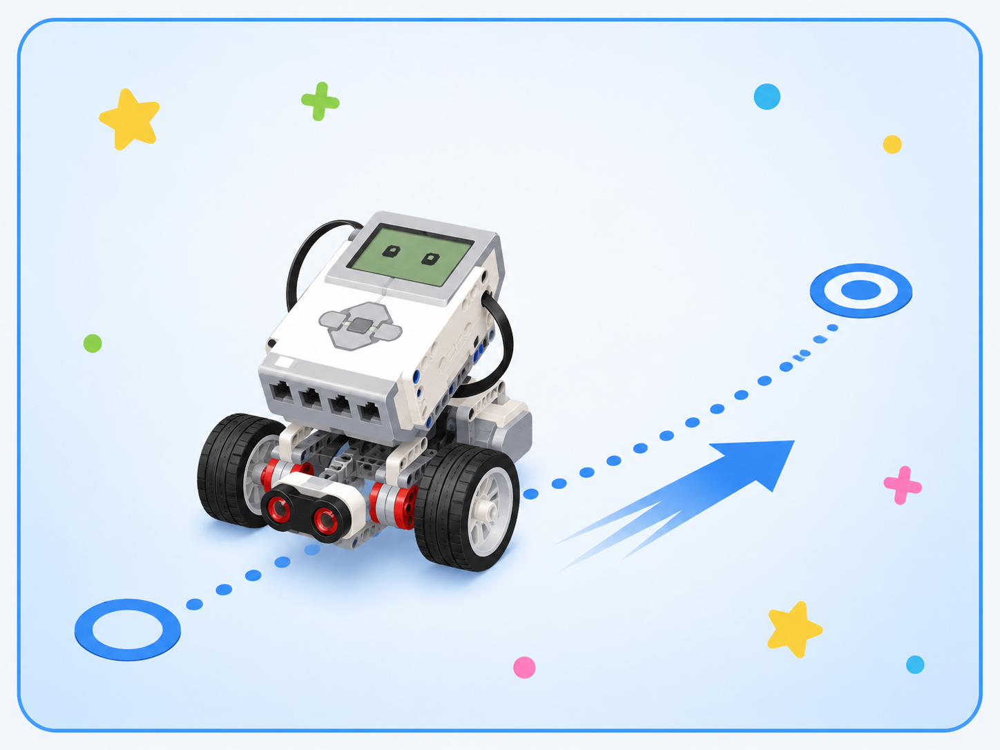
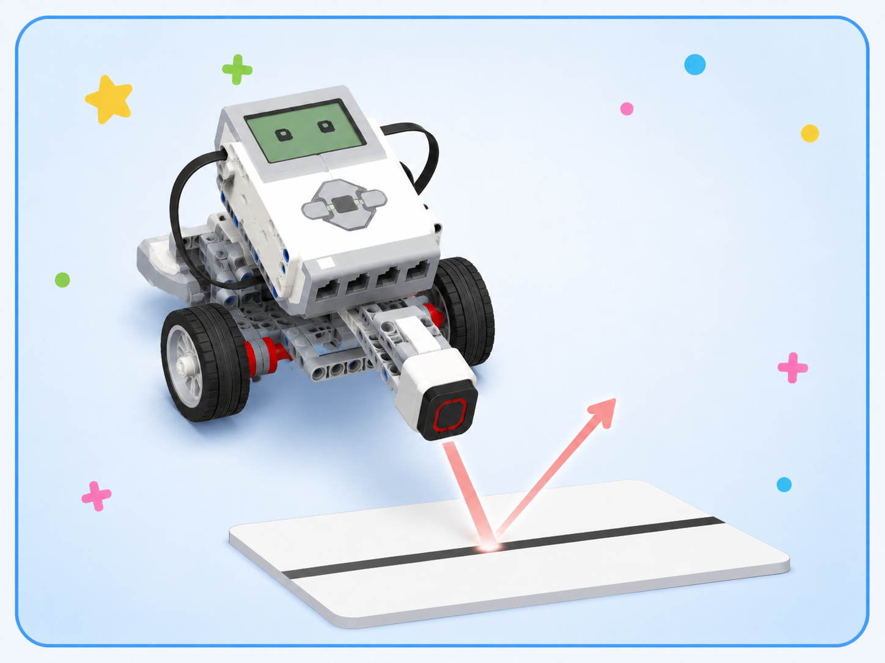
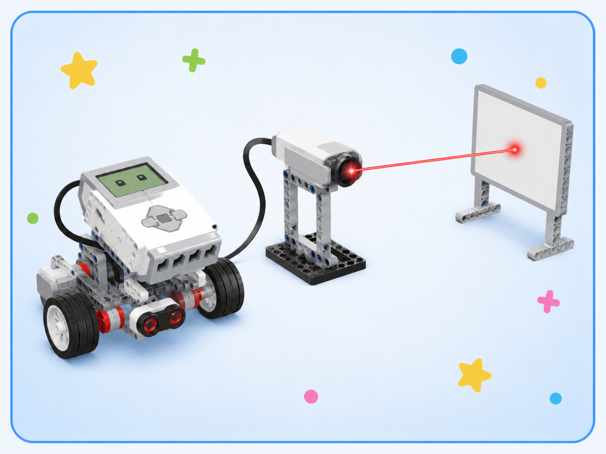
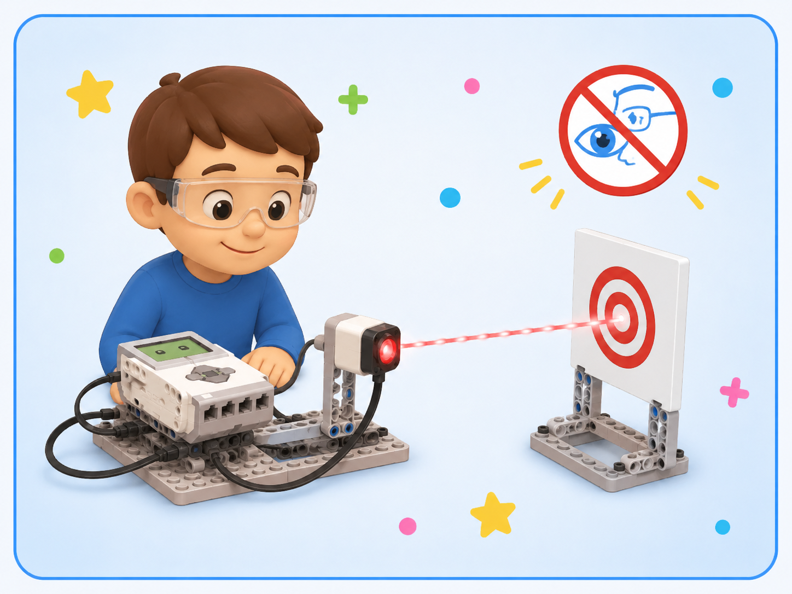

Изучение наборов «Лазеры», «Механика», «Свет»
Теоретический блок
Зачем нужны физические наборы
Наборы «Лазеры», «Механика» и «Свет» помогают изучать физику не только по учебнику, но и через наблюдения, опыты и практические задания.
На прошлом занятии обучающиеся познакомились с физикой как наукой о природе. Теперь важно увидеть, как физические явления можно изучать с помощью специальных учебных наборов. Такие наборы позволяют проводить простые эксперименты, наблюдать результат и делать выводы.
Набор «Механика» связан с движением тел, равновесием, силой, трением и работой простых механизмов. Набор «Свет» помогает изучать распространение света, отражение, тень и работу оптических элементов. Набор «Лазеры» позволяет рассмотреть направленный луч света и использовать его в учебных опытах.
Учебные наборы
Наборы помогают изучать физические явления через практические действия, наблюдения и простые эксперименты.
Механика
Позволяет изучать движение, равновесие, силу, трение, работу колёс, рычагов и других механизмов.
Свет
Помогает понять, как распространяется свет, как возникает тень и как луч отражается от поверхности.
Набор «Механика»
Механика — это раздел физики, который изучает движение тел и причины, по которым это движение изменяется. В робототехнике механика встречается постоянно: робот едет, поворачивает, останавливается, удерживает равновесие, преодолевает трение и передаёт движение от мотора к колёсам.
С помощью набора «Механика» можно показать, как работают простые механизмы, почему телу трудно начать движение, зачем нужны колёса, как меняется движение при изменении силы и почему конструкция должна быть устойчивой.
Изменение положения
Тело движется, если со временем меняет своё положение относительно других тел. Например, робот перемещается по столу или полу.
Причина изменения движения
Сила может заставить тело начать движение, остановиться, ускориться или изменить направление.
Сопротивление движению
Трение возникает при соприкосновении поверхностей. Оно может мешать движению, но без него колёса робота не смогли бы нормально ехать.
Пример
Если робот едет по гладкой поверхности, его движение может отличаться от движения по ковру или шероховатой поверхности. Это связано с силой трения между колёсами и поверхностью.
Набор «Свет»
Световые явления окружают человека каждый день. Мы видим предметы, потому что свет попадает в глаза. Свет может распространяться, отражаться, проходить через прозрачные материалы и образовывать тень.
Набор «Свет» помогает показать эти явления на практике. С его помощью можно наблюдать направление распространения света, образование тени, отражение луча от зеркальной поверхности и изменение изображения при использовании разных материалов.
Что излучает свет
Источником света может быть лампа, фонарик, экран, солнце или специальный элемент учебного набора.
Направление распространения
Луч помогает показать, в каком направлении распространяется свет от источника.
Область без света
Тень появляется, когда непрозрачный предмет закрывает путь свету.
Световые явления
| Явление | Что происходит | Пример опыта |
|---|---|---|
| Распространение света | Свет идёт от источника в определённом направлении | Направить луч фонарика на экран |
| Отражение | Луч света меняет направление после встречи с поверхностью | Направить луч на зеркало |
| Образование тени | Предмет закрывает путь свету | Поставить непрозрачный предмет перед источником света |
| Прохождение света | Свет проходит через прозрачный материал | Посветить через прозрачную пластину |
Набор «Лазеры»
Лазер создаёт узкий направленный луч света. В учебных опытах лазер удобно использовать для демонстрации направления светового луча, отражения и попадания луча на определённую точку.
При работе с лазером важно соблюдать правила безопасности. Нельзя направлять лазерный луч в глаза себе или другим людям. Даже учебный лазер нужно использовать аккуратно и только по инструкции преподавателя.
Направленный луч
Лазерный луч распространяется более направленно, чем свет обычной лампы или фонарика.
Изменение направления
Если лазерный луч попадает на отражающую поверхность, он может изменить направление.
Нельзя светить в глаза
Луч лазера нельзя направлять на лицо и глаза. Работать с ним нужно только под контролем преподавателя.
Важно
Лазер используется только для учебных опытов. Его нельзя направлять на людей, животных, зеркала без задания преподавателя и случайные предметы.
Как проводить физический опыт
Любой опыт должен проводиться аккуратно и по плану. Сначала нужно понять, что именно проверяется. Затем подготовить оборудование, выполнить действия, наблюдать результат и сделать вывод.
Порядок проведения опыта
Проверь себя: какой набор использовать?
Нажмите на ситуацию, чтобы увидеть пояснение.
Подойдёт набор «Механика», потому что он связан с движением, силой, трением и работой механизмов.
Подойдёт набор «Свет», потому что тень возникает при распространении света и его перекрытии непрозрачным предметом.
Подойдёт набор «Лазеры», потому что лазер создаёт направленный световой луч.
Практический блок
Практическая часть занятия направлена на знакомство с учебными наборами, выполнение простых опытов и формирование умения объяснять наблюдаемые физические явления.
Задание 1. Рассмотрите учебные наборы
Цель: познакомиться с назначением наборов «Лазеры», «Механика» и «Свет».
- Рассмотрите наборы, подготовленные для занятия.
- Определите, какие элементы входят в каждый набор.
- Найдите детали, связанные с механикой.
- Найдите элементы, связанные со световыми опытами.
- Обсудите, для каких задач можно использовать каждый набор.
Подсказка: если элемент связан с движением — это механика; если с лучом, тенью или отражением — это световые явления.
Задание 2. Опыт с движением
Цель: наблюдать механическое движение и влияние поверхности.
- Возьмите небольшую тележку или модель робота.
- Запустите её по ровной поверхности.
- Понаблюдайте, как она движется.
- Повторите опыт на другой поверхности.
- Сравните движение в двух случаях.
- Сделайте вывод, как поверхность влияет на движение.
Подсказка: на разных поверхностях сила трения может отличаться, поэтому движение модели тоже изменяется.
Задание 3. Опыт с тенью
Цель: понять, как образуется тень.
- Подготовьте источник света.
- Поставьте перед ним непрозрачный предмет.
- Посмотрите, где появляется тень.
- Измените расстояние между источником света и предметом.
- Понаблюдайте, как меняется размер тени.
- Сделайте вывод, от чего зависит тень.
Подсказка: тень появляется там, куда не попадает свет, потому что его закрывает непрозрачный предмет.
Задание 4. Отражение светового луча
Цель: наблюдать изменение направления светового луча при отражении.
- Подготовьте источник света или учебный лазер.
- Направьте луч на отражающую поверхность.
- Понаблюдайте, куда направляется отражённый луч.
- Измените угол падения луча.
- Сравните направление отражённого луча.
- Сделайте вывод, что происходит со светом при отражении.
Подсказка: при отражении свет меняет направление после встречи с поверхностью.
Задание 5. Правила безопасности при работе с лазером
Цель: закрепить правила безопасного поведения при выполнении опытов с лазерным лучом.
- Прочитайте правила работы с лазером.
- Объясните, почему нельзя направлять лазер в глаза.
- Определите, куда можно направлять луч во время опыта.
- Проверьте, что рядом нет случайных отражающих предметов.
- Выполните опыт только после разрешения преподавателя.
Подсказка: лазерный луч нельзя направлять на людей, животных и в отражающие поверхности без задания преподавателя.
Наглядные опыты с наборами
В этом разделе представлены примеры опытов, которые помогают увидеть, как работают наборы «Лазеры», «Механика» и «Свет».

Движение
Набор: Механика.
Помогает наблюдать перемещение тела, влияние поверхности и изменение скорости движения.

Отражение света
Набор: Свет.
Показывает, как световой луч меняет направление после встречи с отражающей поверхностью.

Лазерный луч
Набор: Лазеры.
Позволяет увидеть направленное распространение света и использовать луч в учебных опытах.

Безопасность
Набор: Лазеры и Свет.
Напоминает, что при работе с источниками света и лазером необходимо соблюдать правила безопасности.
Вопросы для самопроверки
1. Для чего нужны учебные физические наборы?
Они нужны для изучения физических явлений через наблюдения, практические опыты и эксперименты.
2. Что изучает набор «Механика»?
Он помогает изучать движение, равновесие, силу, трение и работу простых механизмов.
3. Что можно изучать с помощью набора «Свет»?
С его помощью можно изучать распространение света, образование тени, отражение и прохождение света через материалы.
4. Чем лазер отличается от обычного источника света?
Лазер создаёт узкий направленный луч света, который удобно использовать для демонстрации направления светового луча.
5. Почему нельзя направлять лазер в глаза?
Лазерный луч может быть опасен для зрения, поэтому его нельзя направлять в глаза себе или другим людям.
6. Что такое отражение света?
Отражение — это явление, при котором свет меняет направление после встречи с поверхностью.
7. Как образуется тень?
Тень образуется, когда непрозрачный предмет закрывает путь свету.
8. Почему поверхность влияет на движение тела?
На разных поверхностях сила трения может отличаться, поэтому движение тела может быть более быстрым или более медленным.
9. Какие этапы есть у физического опыта?
Сначала определяется цель опыта, затем подготавливается оборудование, выполняются действия, проводится наблюдение и формулируется вывод.
10. Какой набор подойдёт для изучения движения робота?
Для изучения движения робота подойдёт набор «Механика», потому что движение связано с механическими явлениями.